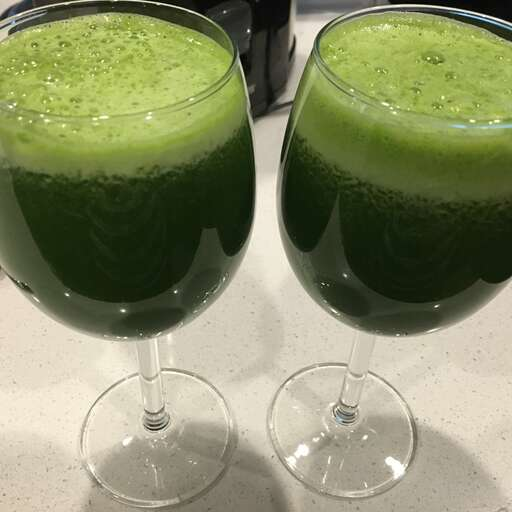

This is a recipe for healthy green juice, for anyone who's thirsty and wants a good drink quickly.
Ingredients:
- 6 leaves kale
- 4 stalks celery, leaves removed
- 2 green apples, halved
- 1 cucumber
- 1/2 lemon, peeled
- 1 (1 inch) piece fresh ginger
Directions:
-
Gather all ingredients.
-
Process kale, celery, green apples, cucumber, lemon, and ginger through a juicer.
-
Serve immediately or store in a glass jar in the fridge for up to a day; shake before drinking.
Return to Top